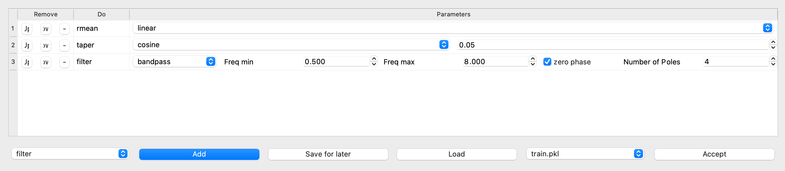
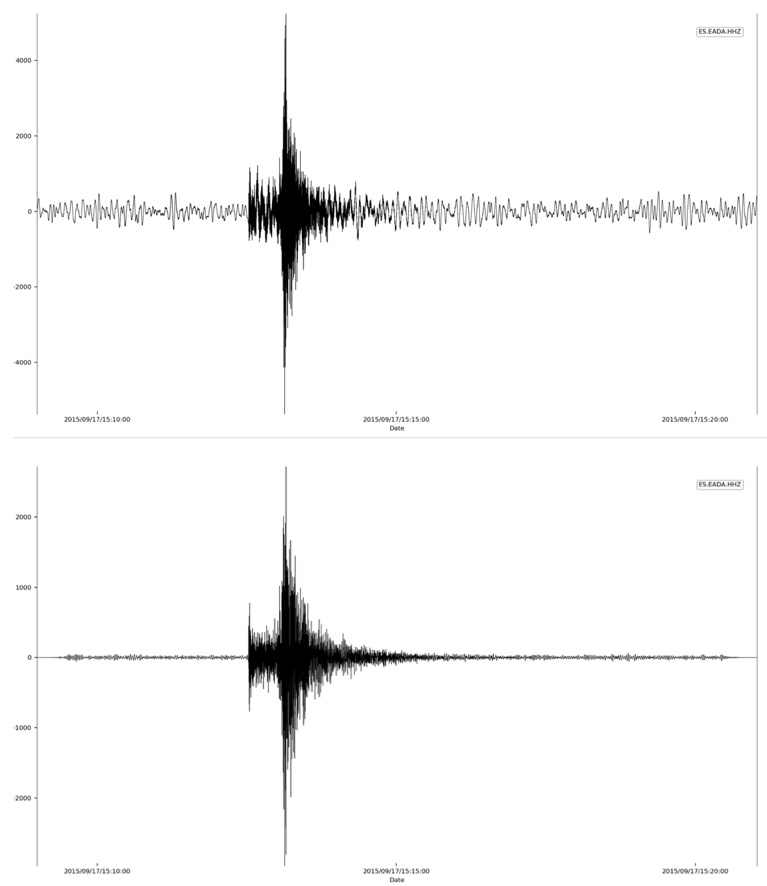
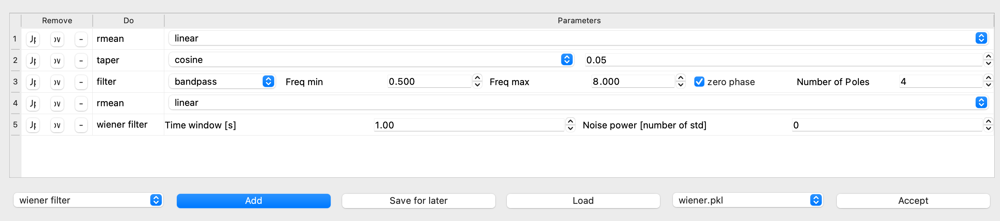
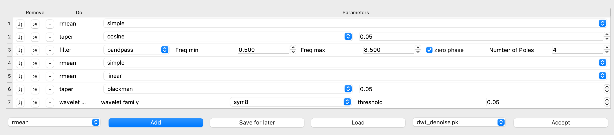
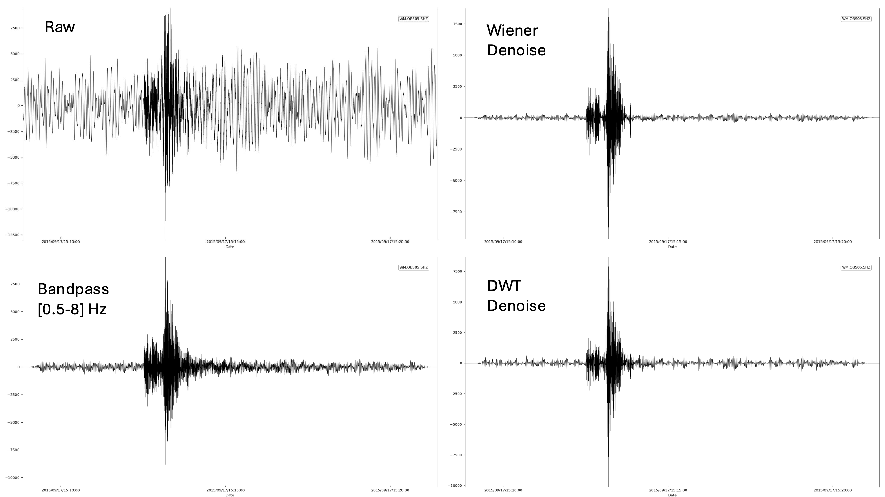

ISP Macro Processing Pipeline
The Macro module in ISP allows users to apply a series of signal processing steps to seismic data using a flexible, GUI-driven interface. Macros are applied sequentially and can include filtering, denoising, normalization, and transformation operations. This macro system enables reproducible, streamlined signal processing for all ISP toolboxes. Adjust each block interactively and view the effect in real time.
This page describes the macro structure, available processing tools, and typical workflows with illustrative examples.
Macro Structure
The macro tree defines each processing step in logical order. Each node represents a category or method with customizable parameters.
Detrending Methods
Remove mean / trend from the signal
linear— Remove a best-fit linedemean— Subtract mean valuepolynomial— Fit and subtract a polynomial (e.g., order 3)spline— Remove a smooth spline trend
Taper
Applies a window function to reduce edge effects
- Parameter:
max_percentage(e.g.,0.05= 5%) - Supported Windows:
cosine,barthann,bartlett,blackman,blackmanharrisbohman,boxcar,chebwin,flattop,gaussiangeneral_gaussian,hamming,hann,kaiser,nuttallparzen,slepian,triang
Normalize
Scales data globally
0: Normalize by maximum- Any other value: Divides trace by specified value
Filtering
Band filter operations
- Parameters:
freqmin,freqmax,zerophase,poles - Methods:
bandpass,lowpass,highpass,bandstopcheby1,cheby2,elliptic,bessel
freqminmust be less thanfreqmax.
Wiener Filter
1D Wiener de-noising
- Parameters:
time_window(sec),noise_power - Tip: Use
1swindow; ifnoise_power=0, it's estimated from variance.
Resample
Adjust signal's sampling rate
- Parameters:
new_sampling_rate,pre_filter(recommendedTrue)
Fill Gaps
Reconstruct missing data
- Methods:
latestorinterpolate
Differentiation
- Methods:
gradient
Integration
- Methods:
cumtrapz,spline
Time Shifting
Shift traces by custom time offsets
- Parameter: List of shifts (in seconds)
Remove Instrument Response
- Parameters: pre-filter corners,
water_level(60–90),outputunits
Add White Noise
Simulate noise at defined power
- Parameter: Noise power in dB relative to signal max
Spectral Whitening
Flattens spectrum using a defined bandwidth
- Parameters:
spectral_bandwidth,taper(True/False)
Time Normalization
Normalize signal in time
- Parameters:
time_window,method - Methods:
time-normalization,1-bit,clipping(with iterations)
Wavelet Denoise
Wavelet-based signal denoising
- Parameters:
wavelet_family(e.g.,sym8),threshold(e.g.,0.05)
Smoothing
Reduces high-frequency noise
- Parameters:
time_window,fwhm - Methods:
mean,gaussian,tkeo
Spike Removal
Remove outliers or spikes
- Parameters:
time_window,threshold(in std units)
Filter Design Example
In this example, we use a regional earthquake trace expected to contain energy in the 0.5–8 Hz band. We:
- Remove linear trend
- Apply a cosine taper (5%)
- Use a bandpass filter with:
freqmin=0.5freqmax=8poles=4zerophase=True

The top panel shows the raw signal, and the bottom shows the filtered version:

Signal Denoising Example
We now show how to denoise a noisy ocean-bottom seismometer trace using:
- Wiener filter
- Wavelet denoising
Step 1: Wiener Filter

Step 2: Wavelet Transform

Final Output
